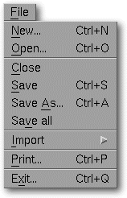
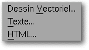

<!-- Documentation XQuad (c)1995-2000 AXENE contact axene@axene.org>
<html>

<head>
<title>File Menu</title>
</head>

<body BGCOLOR="#FFFFFF" BACKGROUND="Images/back.gif" TEXT="#000000">

<p ALIGN="right">  </p>

<p><br>
<br>
The File menu houses all commands requiring access to files on the disk. <br>
<br>
</p>

<hr>

<p align="center"><br>
 <br>
<small><i>Screen shot: File pulldown menu. </i></small></p>

<p><br>
</p>

<hr>

<p><br>
</p>

<h3>The file menu contains the following options:</h3>

<ul>
  <li><a NAME="new_menu_entry">&gt;<i>&quot;New...&quot;</i> <b>creates a new document</b>. It
    create a nez spreadsheet named <i>&quot;Untitled X&quot;</i>. </a><br>
    &nbsp; </li>
  <li><a NAME="open_menu_entry"><i>&quot;Open...&quot;</i> <b>loads an XQuad document</b>
    from a file. It is followed by the '</a><a HREF="Box_File_Selectors.html#fs_load">Open a
    Document</a>' file selector. <br>
    &nbsp;</li>
  <li><a NAME="close_menu_entry"><i>&quot;Close&quot;</i> <b>closes the active document</b>.
    If this document has been modified since last saving, a dialog box will open to propose
    saving it. </a><br>
    &nbsp;</li>
  <li><a NAME="save_menu_entry"><i>&quot;Save&quot;</i> <b>saves the active document</b> under
    its original name. If no name has been given to the document, the '</a><a HREF="Box_File_Selectors.html#fs_save">Save a Document</a>' file selector will open. <br>
    &nbsp;</li>
  <li><a NAME="save_as_menu_entry"><i>&quot;Save As...&quot;</i> <b>saves the active document
    under a name other than its original</b>. It is followed by the '</a><a HREF="Box_File_Selectors.html#fs_save">Save a Document</a>' file selector. <br>
    &nbsp;</li>
  <li><a NAME="save_all_menu_entry"><i>&quot;Save All&quot;</i> saves all the open documents
    which underwent modification since last saving. If a document already has a name, it will
    be saved under that name. If not, the '</a><a HREF="Box_File_Selectors.html#fs_save">Save
    Document as...</a>' file selector will open. <br>
    &nbsp;</li>
  <li><a NAME="import_menu_entry"><i>&quot;Import&quot;</i> allows <b>importing data from from
    several differents data formats</b>. the '</a><a HREF="Box_FS_Import.html">Import document</a>'
    file selector will open.. <br>
    &nbsp; </li>
  <li><a NAME="export_menu_entry"><i>&quot;Export&quot;</i> opens to the following sub-menu:</a><p align="center"> </p>
    <ol>
      <li><a NAME="export_vector_menu_entry"><i>&quot;Vector...&quot;</i> <b>exports a vector
        drawing</b> from a the cell selection or a chart. It opens the '</a><a HREF="Box_FS_Export.html#fs_export_vector">Exporting Documents</a>' fileselector. <br>
        &nbsp; </li>
      <li><a NAME="export_text_menu_entry"><i>&quot;Text...&quot;</i> <b>exports a cell selection
        as text</b>. It opens the '</a><a HREF="Box_FS_Export.html#fs_export_text">Exporting
        Documents</a>' fileselector.<br>
        &nbsp; </li>
      <li><a NAME="export_html_menu_entry"><i>&quot;HTML...&quot;</i> <b>exports a cell selection
        as HTML code</b>. It opens the '</a><a HREF="Box_FS_Export.html#fs_export_html">Exporting
        Documents</a>' fileselector.<br>
        &nbsp; </li>
    </ol>
  </li>
  <li><a NAME="print_setup_menu_entry"><i>&quot;Print setup...&quot;</i> <b>modifies the
    printings parameters</b>. it opens the '</a><a HREF="Box_PrintSetup.html#fs_export_html">Print
    Setup</a>' dialog box. <br>
    &nbsp; </li>
  <li><a NAME="print_menu_entry"><i>&quot;Print...&quot;</i> <b>prints the active document</b>.
    It calls up the '</a><a HREF="Box_Print.html">Print</a>' dialog box. <br>
    &nbsp;</li>
  <li><a NAME="quit_menu_entry"><i>&quot;Quit...&quot;</i> <b>quits XQuad</b>. If there
    are still open documents that have not been saved, a dialog box will open to save each one
    individually. Afterwards a confirmation box will appear so that exit from XXQuad may
    be confirmed. </a><br>
    &nbsp;</li>
</ul>

<p><br>
</p>

<hr>

<p ALIGN="right"></p>
</body>
</html>
